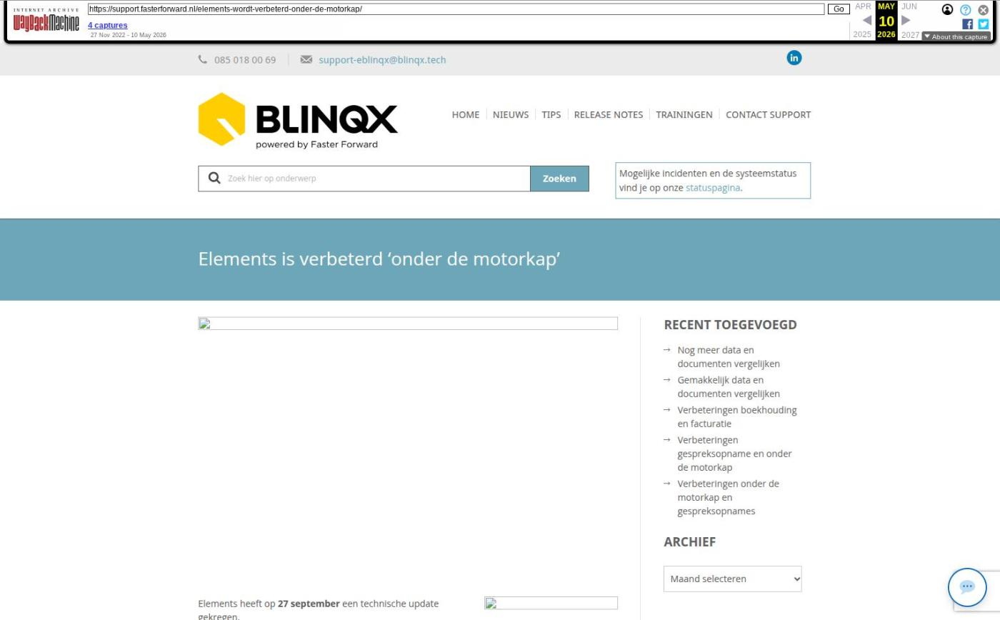

Elements is verbeterd ‘onder de motorkap’

Tekstinhoud
Elements heeft op 27 september een technische update gekregen.
Dit is geen update zoals je deze van ons gewend bent. Als gebruiker van Elements zie je er namelijk niets van: alles blijft hetzelfde werken.
Toch is deze update heel belangrijk voor onze software, en dus voor jou als gebruiker van Elements.
Jeroen Stamkot, Teamlead Development, legt je uit waarom.
Al 17 jaar ontwikkeling
Elk jaar ontwikkelen we zo’n 300 nieuwe features. Dit doen we al zo’n 17 jaar lang, waardoor Elements beschikt over alle mogelijkheden voor financieel advieskantoren. Al deze onderdelen, van groot tot klein, moeten we onderhouden en up-to-date houden. Dit doen onze programmeurs continu, zonder dat je hier als klant iets van merkt.
Om Elements te verbeteren, heeft onze software deze maand een grote onderhoudsbeurt gekregen. Zie het als een grote beurt van je auto: onder de motorkap gebeurt er van alles, maar aan de buitenkant zie je er niets van. In het kort is Elements nu schoner, nieuwer en up-to-date.
Schoner
Bepaalde functies in Elements zijn ontwikkeld voor andere softwareprogramma’s die verbonden of geïntegreerd zijn met Elements. Omdat deze niet meer van toepassing zijn, worden deze uit de software gehaald.
Jeroen: “Wanneer externe softwareprogramma’s niet meer bestaan of niet meer worden gebruikt, blijven deze regels code nog wel in Elements zitten. Deze ‘overbodige’ regels code blijven dan bestaan, terwijl deze geen functie meer hebben. Daarom hebben we deze verwijderd, zodat onze software ‘schoner’ blijft.”
Nieuwer
Daarnaast vinden er optimalisaties plaats van modules en functionaliteiten die dagelijks worden gebruikt. Zo zijn onder andere de codes van koppelingen en software van derden ook weer vernieuwd. Zo houden we onze software veilig en zorgen we ervoor dat alles blijft werken zoals het hoort.
Jeroen: “Elements heeft (deels) software van externe partijen geïmplementeerd. Zo zijn de PHP functies voor het versturen van e-mails én het ophalen van de actuele woningwaarde weer helemaal up-to-date. Zo werken we met de meest actuele standaarden in de markt. Bovendien werkt onze analysetool weer iets sneller, waardoor we de drukte in Elements-omgevingen beter kunnen monitoren.”
Up-to-date
Tot slot is Elements weer helemaal up-to-date als het gaat om veiligheid. Onze software voldoet namelijk aan hoge veiligheidseisen en wordt daarom intensief getoetst. Om deze veiligheidsstandaard hoog te houden, hebben we verbeteringen doorgevoerd.
Jeroen: “Een bedrijf dat is gespecialiseerd in cybersecurity helpt ons om Elements zo veilig mogelijk te houden. Elk kwartaal voeren zij zogenoemde ‘pentesten’ uit om kwetsbaarheden aan het licht te brengen. Zij geven ons adviezen om onze functies te verbeteren en deze voeren we door in Elements.”
Geplaatst op 22 september 2022 (Laatste update: 27 september 2022)